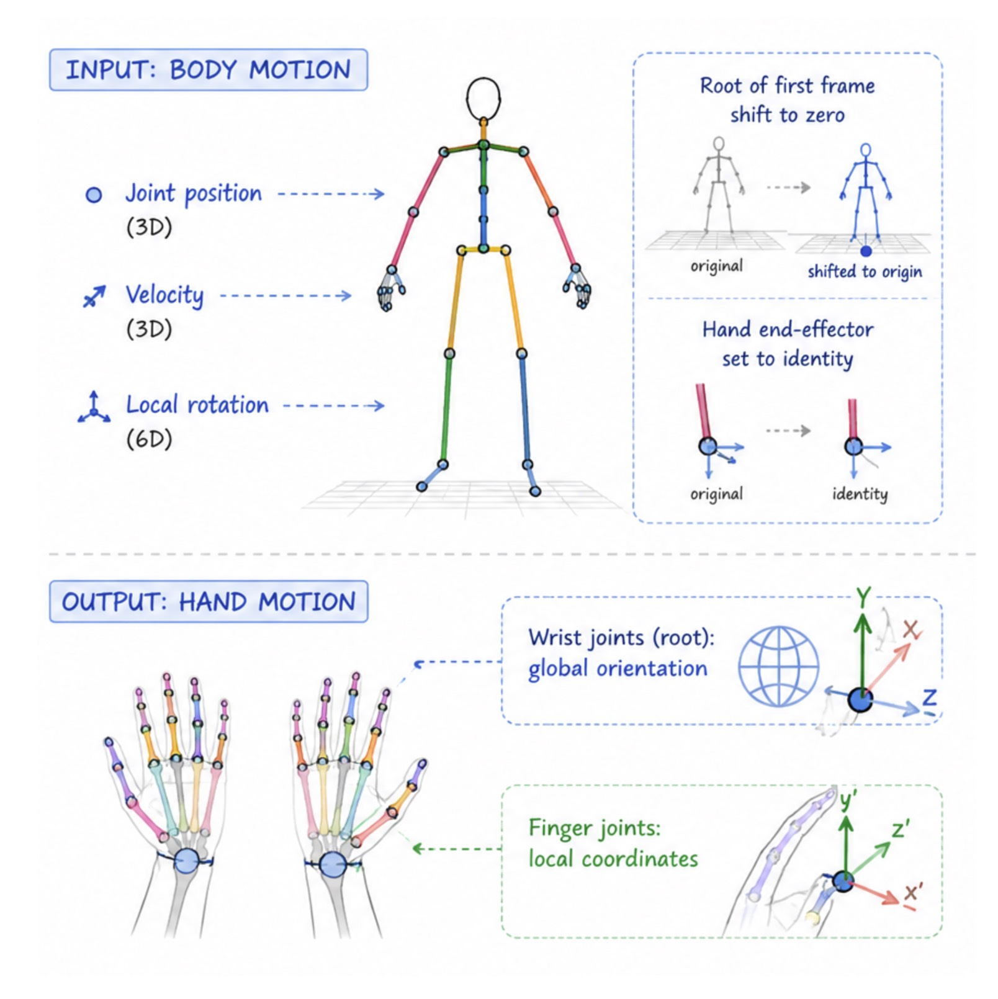

Prior-First, Condition-Second
Scalable and Controllable Hand Motion Completion
We are happy to give back to the community — for example, by adding hands to existing motion datasets. Contact us to enhance your dataset.
- Add hand poses to the bone-seed 144h dataset.
Hand Motion Completion
Generate coherent, kinematically consistent hand motion from body motion in real time — then steer it with text or attributes using only a few hours of labels.
- Streaming autoregressive body–hand prior.
- Learns the kinematic prior from ~100 hours of unstructured, unlabeled motion.
- Adds text- and attribute-driven control with only a few hours of paired labels.
- Interactive Blender add-on: 9000 frames in ~15 seconds on a MacBook CPU.
Understand core idea in 5 seconds
Controllable motion generation should be framed as sampling from a learned kinematic prior, rather than learning an end-to-end mapping from sparse conditions to motion trajectories. We call this the prior-first, condition-second paradigm:
- Prior first. Learn how the body and hands coordinate — how parts transfer momentum and evolve over time — from abundant unlabeled motion, under minimal semantic assumptions.
- Condition second. Freeze that prior and attach lightweight adapters that simply steer sampling toward a user's intent (text or attributes), instead of relearning kinematics for every control interface.
But wait, why not just…?
Why not train one end-to-end conditioned generator?
Semantic supervision for motion is scarce, expensive, and dataset-specific: capture protocols, skeletons, and annotation schemes rarely transfer. Learning kinematics and semantics jointly from limited paired data overfits and under-uses the conditions. By separating them, the prior captures motion regularities that are invariant across datasets, and control becomes a cheap, dataset-specific residual on top.
How do the hands stay coupled to the body?
Biological motion is driven by energy transfer along a specific kinematic chain, not by attending to all joints indiscriminately. Our Kinematic Chain Cascading Attention (KCCA) restricts the hand query to the ordered root→spine→shoulder→arm→forearm chain and gates it with the clean root state. This keeps attention stable even at high diffusion noise levels, so hands do not “float” or slide relative to the body.
How can you control it with so few labels?
Semantic commands operate at different kinematic levels — “energetically” modulates upstream momentum, while “pinch with two fingers” targets local articulation. Our semantically-layered adapters inject conditioning through zero-initialized, layer-specific gates at the right stages of the frozen prior. The adapter only learns the minimal residual for navigation on the manifold, converging with as little as a few hours of labeled data.
Input and output space
Our prior is a streaming, clip-level autoregressive model: instead of generating a whole take at once, we split a long body motion into short overlapping segments and complete the hand motion segment by segment. At each step the model predicts a fixed future window of hand poses (L = 45 frames) conditioned on (i) the corresponding body-motion window and (ii) a short buffer of previously generated hand frames (P = 10 frames). Feeding this history buffer into the next segment is what keeps consecutive clips temporally continuous, with no visible seams at window boundaries, while still allowing arbitrarily long, real-time rollout.
To make the model invariant to where the character is in the world, every segment is processed in a canonical frame: the root of its first frame is shifted to the origin, and the hand end-effectors are reset to identity. The network therefore only ever reasons about relative body–hand dynamics, which is a large part of why the learned manifold transfers so well across datasets and in-the-wild inputs. The representation used for each segment is summarized below.

Body Motion (input)
- Joint position + velocity + local rotation.
- The root of the first frame is shifted to zero.
- The hand end-effector is set to identity.
Hand Motion (output)
- Wrist joints (root): predicted in global orientation.
- Finger joints: predicted in local coordinates.
Where the prior learns from
The kinematic prior is trained on ~100 hours of diverse, unlabeled motion drawn from public datasets and in-house captures, spanning locomotion, daily activities, and dyadic interactions.
Composition of the ~100-hour training pool by source.
One body, many plausible hands
Our prior models a distribution of plausible completions rather than memorizing a single clip. The same body input yields distinct yet natural hand motions under different random seeds.
Different random seeds, same body motion — diverse, plausible hand articulations.
Robust on in-the-wild motion
On out-of-distribution body motions from AMASS and HunyuanMotion text-to-motion outputs — unseen during training and without ground-truth hands — our prior still generates hands consistent with the upstream arm dynamics, and can be paired with external body-motion generators.
Robustness on in-the-wild body motions from AMASS and HunyuanMotion — use the arrows to page through.
Semantic control: attributes and text
Lightweight adapters steer the frozen prior toward user intent. Attribute control injects only into the last, fine-grained layers to preserve global body–hand consistency, while text control is enabled across the full kinematic hierarchy so it can affect both global dynamics and fine finger articulation.
Interactive Blender add-on
We provide a Blender add-on for interactive authoring that supports efficient generation (9000 frames in ~15 seconds on a MacBook CPU), fitting directly into production animation pipelines.
BibTeX
@article{shi2026priorfirst,
title = {Prior-First, Condition-Second: Scalable and Controllable Hand Motion Completion},
author = {Shi, Mingyi and Chen, Xuelin and Komura, Taku},
journal = {Computer Graphics Forum},
year = {2026},
doi = {10.1111/cgf.70568},
note = {ACM SIGGRAPH / Eurographics Symposium on Computer Animation 2026}
}Acknowledgements
We thank the anonymous reviewers for their constructive feedback — including those who did not manage to obtain good results by running our add-on on randomly perturbed motion. We are also grateful to the friends who kindly provided test cases. Except for the training data, the examples shown in the videos are the copyright of their respective owners and are used here for demonstration purposes only.